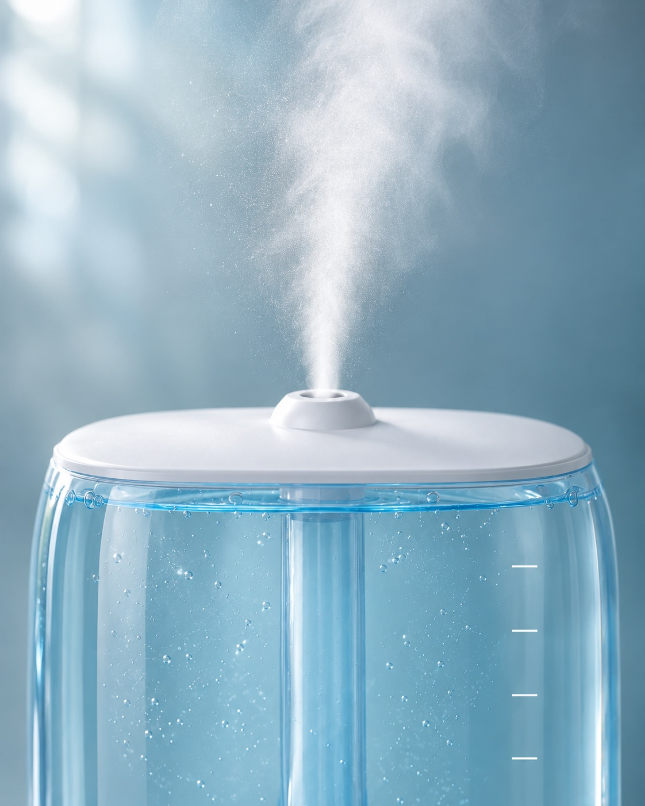
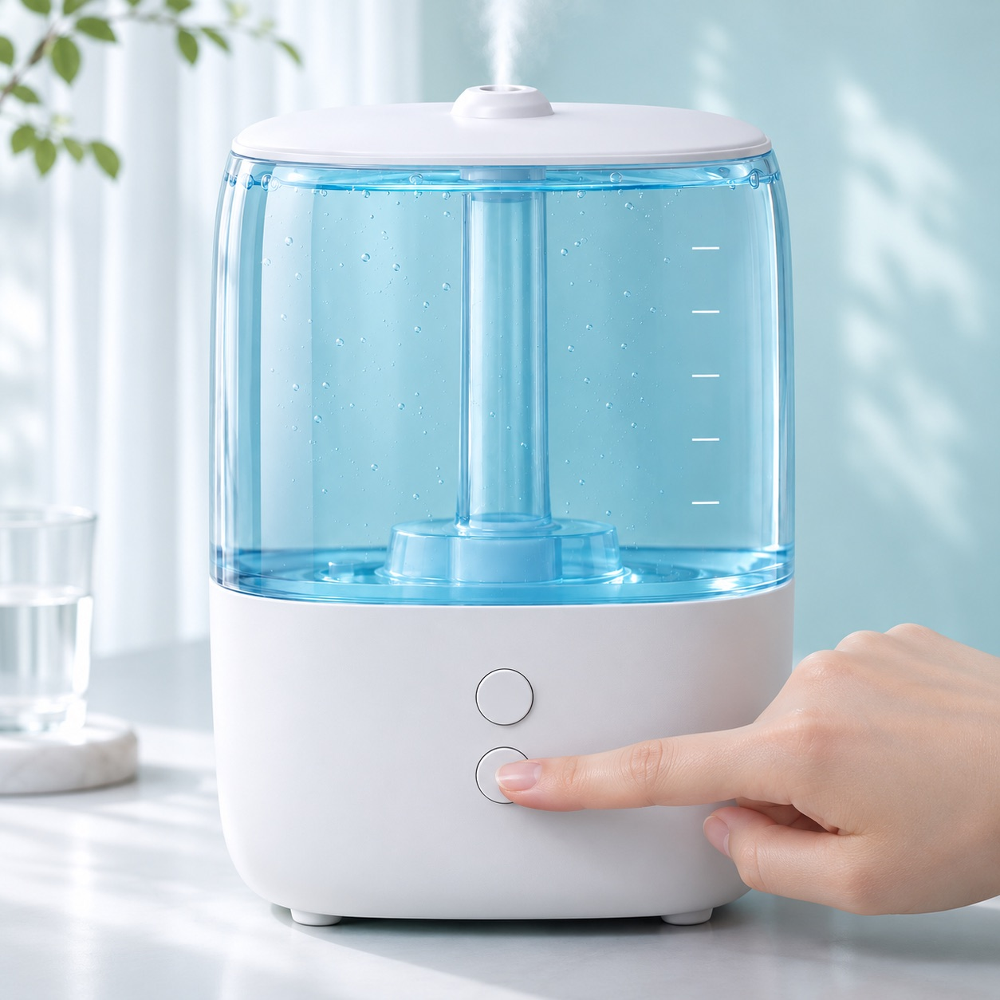
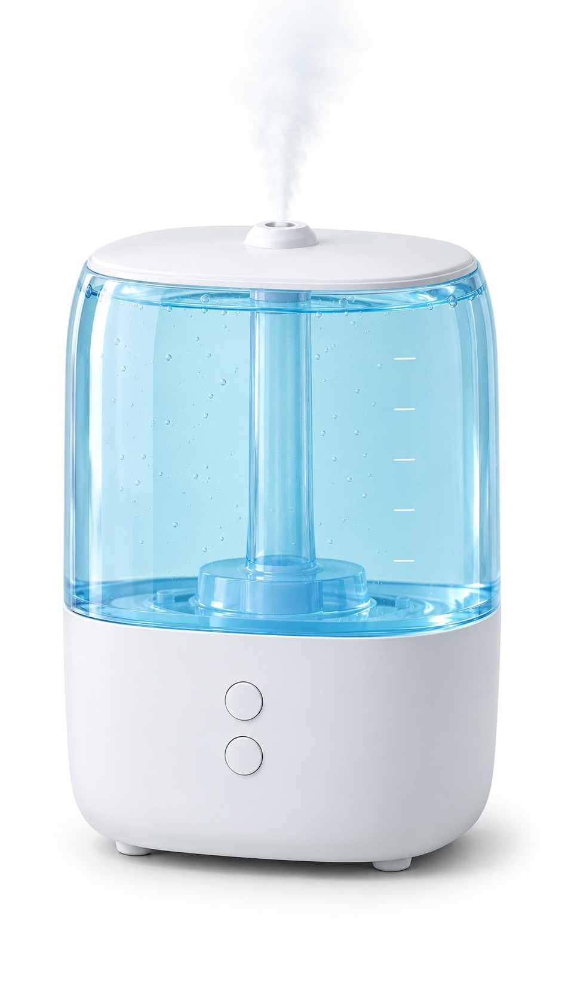
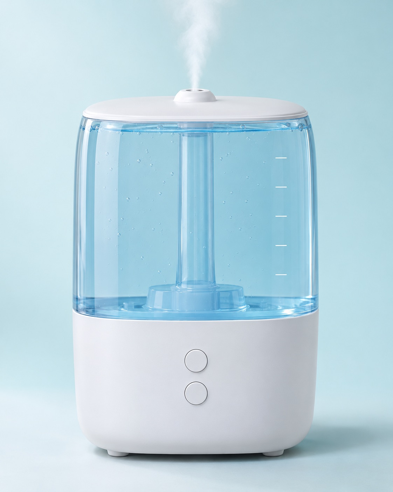
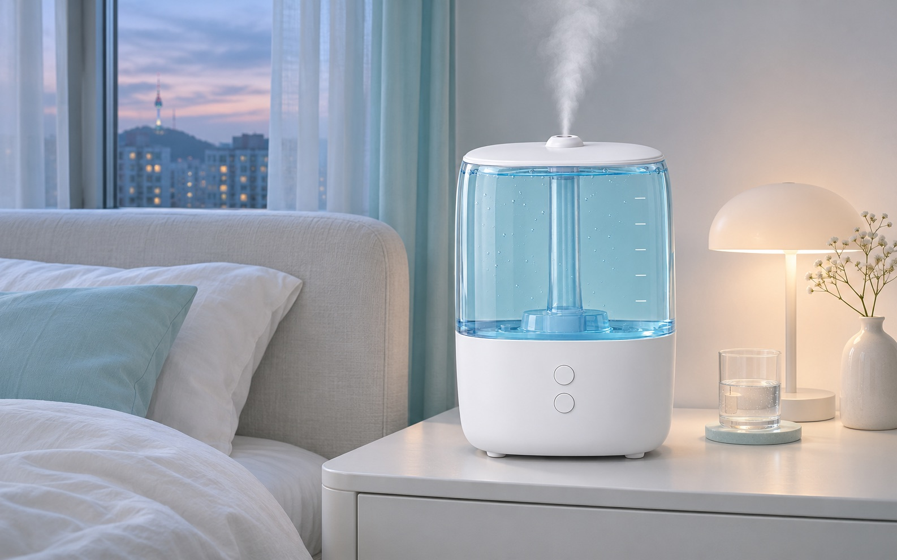
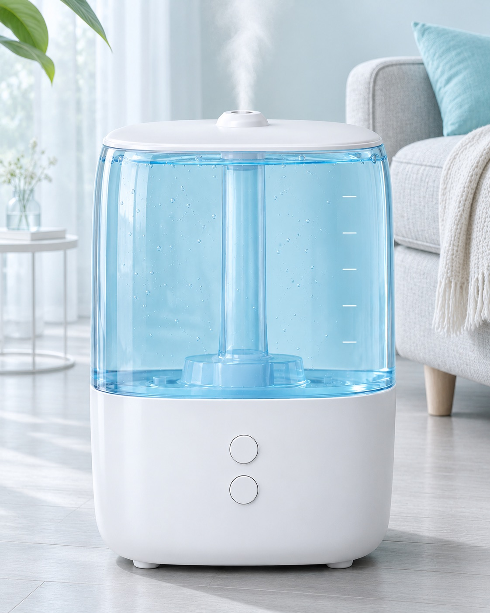
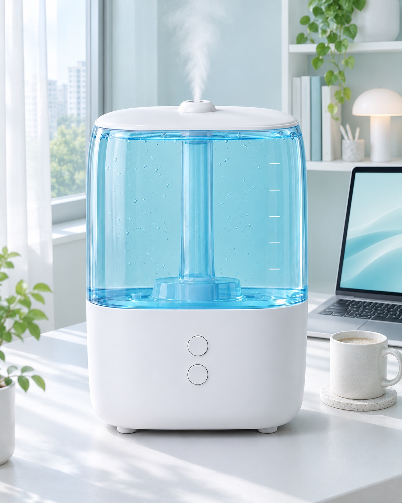
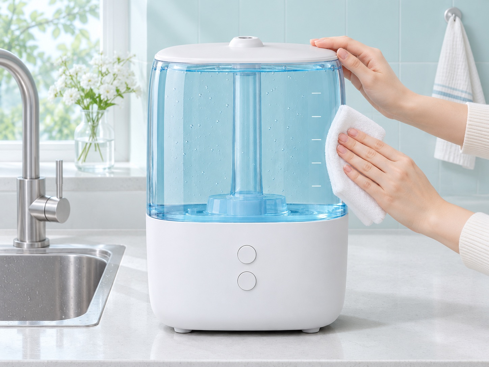
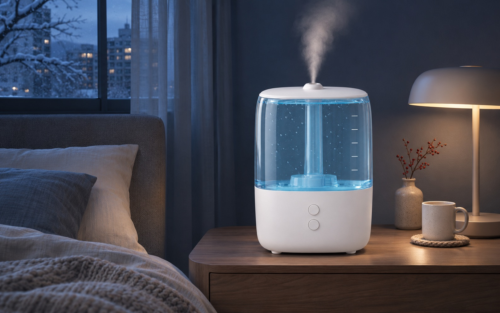

WATERY ULTRASONIC HUMIDIFIER
한 번 채운 4L로
오래 촉촉하게
오래 촉촉하게
난방 켠 겨울 방을 위한 초음파 가습기
4L
대용량 물통
초음파
가습 방식
혹시 이런 고민 있으신가요?
난방 켠 겨울 방,
바짝 마르지 않나요
바짝 마르지 않나요

그래서 준비했습니다
자고 일어나면 목이 칼칼해요
히터만 켜면 피부가 당겨요
가습기 물 채우는 게 귀찮아서
결국 안 써요
결국 안 써요


건조함도, 번거로움도
물만 채우면,
나머지는 워터리가
나머지는 워터리가
바싹 마른 방 공기

초음파 가습
고운 물 입자로
방 안을 촉촉하게
방 안을 촉촉하게
자꾸 채우는 물
4L 물통
넉넉하게 담아
보충은 덜 자주
보충은 덜 자주
POINT 01
자주 채우지 않아도 되는
넉넉한 4L 물통
한 번 가득 채워 두면
물 보충 걱정을 덜어요
물 보충 걱정을 덜어요
넉넉한 물통
물 채우는 곳
[확인 필요: 4L 기준 연속 사용 시간, 급수 방식]
4L
POINT 02
물을 끓이지 않고
초음파로 만드는
고운 물 입자
물통의 물4L 가득
초음파 진동떨림으로 쪼개고
고운 물 입자방 안으로

초음파 진동이 물을 잘게 쪼개
고운 물 입자로 내보내요
[확인 필요: 시간당 가습량(ml/h), 소음]
POINT 03
방과 시간에 맞춰
쓰는 방식에 맞춘
편의 기능

조작부에서
원하는 대로 켜고 끄세요
담을 기능[확인 필요: 분무량 단계, 타이머, 무드등, 물 부족 시 자동 꺼짐 가운데 실제로 있는 기능]
DETAIL
물통, 분무구, 조작부까지
가까이 보세요

물통

조작부
매일 손이 닿는 곳을
하나씩 살펴보세요
DAILY USE
건조한 곳이라면
어디에 두어도
촉촉하게

침실 머리맡잠들기 전 켜 두세요

거실 소파 옆

책상 옆
HOW TO USE
세 단계면
바로 촉촉하게
STEP01
물 채우기물통에 깨끗한 물을
채워 주세요
채워 주세요
STEP02
전원 켜기전원을 켜면
가습이 시작돼요
가습이 시작돼요
STEP03
분무량 맞추기방 크기와 습도에 맞게
조절해 주세요
조절해 주세요
[확인 필요: 실제 조작 순서와 사용 시 주의점]
CARE
깨끗하게 쓰는
관리 습관

물통과 분무구를 깨끗하게 두면
매일 산뜻하게 쓸 수 있어요
[확인 필요: 물통·분무구 세척 방법과 물 교체 주기]
INFORMATION
상품 정보 제공 고시
| 품명 | 워터리 초음파 가습기 4L |
|---|---|
| 가습 방식 | 초음파식 |
| 물통 용량 | 4L |
[확인 필요: 모델명, KC 인증, 정격전압·소비전력, 크기·무게, 구성품, 제조자·제조국, 품질보증기준, A/S 연락처]

WATERY
촉촉한 하루의 시작,
워터리 초음파 가습기 4L